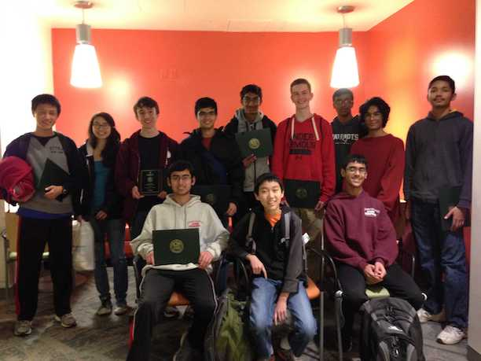

Weekly practice problems will be posted here. You will need to create an account if you have not already done so.
Link to a useful book. It covers everything that we will cover throughout the year and much more.
ACSL practice problems are posted here

The Westford Academy Programming Team is a club devoted to competitive programming and computer science contests. Last year, the team participated in two programming contests and placed well in both. The club focuses on developing practical programming skills for competitions.
Meetings are held once a week in the programming lab (Mrs. Trehan's room). Anyone interested in joining is welcome to attend. All levels of experience are welcome.